Велопоход "Мыс Доброй Надежды", Южная Африка
Не ходите дети
В Африку гулять…
Корней Чуковский.
Отпусти меня тятя на волю
Не держи ты меня под замком
По весеннему минному полю
Хорошо побродить босиком
И. Иртенев.
В ноябре 2013 года состоится четвертое
велопутешествие по Южно-Африканской Республике.
Вдоль двух океанов в Кейптаун
ЮАР – это очень далеко. Чтобы попасть в эту страну надо сначала лететь в Швейцарию (Англию или Эмираты), часа три, затем пол суток мчаться в южное полушарие до Йоханнесбурга, и на последок еще пару часиков лететь в город George, что на Индийском океане… В самолете мы проведем почти сутки! За это нам бонус: в ноябре в южном полушарии ВЕСНА. Может ли быть в ноябре в России минус 10? Может. Будет ли в ЮАР плюс 30? Наверняка. Значит мы «преодолеем» 40 градусов!
Не счесть
алмазов в каменных пещерах,
Не счесть жемчужин в море полудённом.
«Садко». Ария Индийского гостя. Вероятно, пел он
про Южную Африку.
| 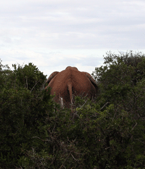 |
|
Южно-африканский пейзаж. Фото И. Гуревича
|
ЮАР страна с длительной историей, не характерной для этой части мира. Причин такого хода событий две: хороший климат, и удачное географическое положение на путях из Европы в Индию, Индонезию, Австралию. Посему побережье ЮАР застраивалось городами, а также в эти края переселялись и белые люди. Почему переселялись? Ну, все знают, как плохо живется в Европе, и как хорошо в Африке… Плотность населения в Европе была очень высока, пахотных земель не хватало. А тут – раздолье! Бери, паши, сей, жни…
Основными переселенцами были голландцы, немцы и англичане. Многие города сохранили в старинной застройке голландские черты, и голландские же названия. А «открыли» данную местность на исходе пятнадцатого века португальцы. Первые голландские поселения начали появляться на этой территории с середины 17 века. Здесь даже образовалась особая нация – буры. Буры – потомки голландских колонистов.
Что интересного в ЮАР? Самое впечатляющее в этой части страны, это океан. Вернее, два океана, Индийский и Атлантический. Берег не просто подходит к океану. Он обрывается к нему двухсотметровыми обрывами, с которых открываются потрясающие виды. В ЮАР есть мыс Доброй Надежды, красивое и легендарное место, которе мы посетим на маршруте. В ЮАР есть Кейптаун, и есть негритянские поселения, где люди живут в каких-то строениях, сделанных из подручных материалов. В ЮАР, в национальных парках, по которым идет маршрут, бегают по дорожкам обезьяны. Велосипедистов, правда, не трогают. Кстати, ни в одном другом походе я не видел столько разной живности, как в ЮАР. От дохлой кобры до живого слона. Правда, это, конечно, как повезет. Гарантировать встречу с коброй, мы увы, не можем.
Однако продолжим: в ЮАР есть Столовая гора, на которую мы совершим восхождение во время пребывания в Кейптауне. Разумеется не как лохи на фуникулере, а по-настоящему, по тропе. Наконец, в ЮАР есть место, где можно плюнуть на все, и посидеть в пингвинах. Да, просто посидеть в пингвинах на берегу моря...
| 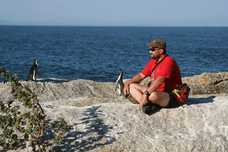 |
|
Пингвин Африканский мелковат, в отличие от его
Антарктического собрата. Видимо, суровый климат Африки не дает ему
вырости
|
| 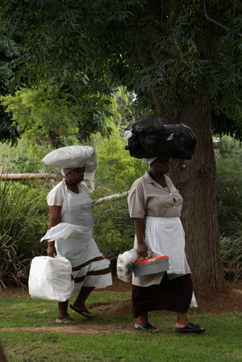 |
|
Южно-африканские девушки. Фото И. Гуревича
|
День 1. Этот замечательный день мы проведем в самолетах, пока не прибудем в городок George на берегу Индийского океана, где нас встретит местный (южно-африканский) англоговорящий гид, с машиной сопровождения и велоспедами для тех, кто решит взять велосипеды в прокат. Отчаиваться не надо, наш русскоязычный гид тоже будет. На велосипед в этот день ни ногой, заселемся в отель, отдыхаем. Можно предаться чревоугодию, достать намибийское пиво из холодильника...
Конечно, логическую цепочку нужно бы продолжить описанием красот местных девушек. Правильнее всего сказать, что местные девушки очень на любителя. Конечно, рост 1.80, вес 100 и ношение тяжестей на голове впечатляет. Но все-таки, лучше везти сюда своих подруг. Да, знойная Африка. Прямо скажем, экзотика. Да и до красот ли будет нам после такого перелета?
День
2. 60 км
Потихоньку пробуем оседлать велосипед. Километраж сегодняшнего дня не
велик, и в основном идет под гору. Мы называем это "акклиматизация",
хотя, конечно, грамотная акклиматизация, это когда целую неделю лежишь
под пальмой и пьешь пиво. В смысле, безалкогольные тонизирующие
напитки. Но где ж в наше время взять неделю? Поэтому поедем на
велосипеде сразу, но в щадащем темпе, на небольшие расстояния. Зеленые холмы Африки вдоль дороги в широком
ассортименте.
Мы доберемся по асфальтовой дороге к огромной пещере Канго Кэйв. Пещера огромна. Действительно, Африканский размер. Залы по много сотен квадрантых метров, высота десятки метров. Толстые сталактиты в двадцать обхватов... Часть пещеры освещена и "цивилизована" - проложены дорожки, сделаны перила. Некоторые говорят, что освещение делает пещеру искусственной, но мне лично нравится. Что увидишь под землей, если не мощные прожекторы? Ведь и высота пещер десятки метров, и ширина залов огромна. Перед Оудсхоорном мы заедем Buffelsdrift game reserv на сафари. Сафари - одна из визитных карточек ЮАР. Надо посетить!
| 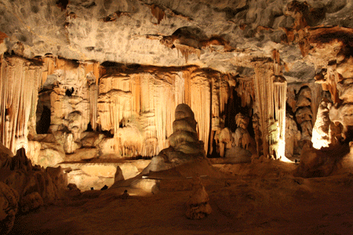 |
|
В пещере каменной... И. Гуревич, велопоход 2009.
|
День 3. 70
км
Утро этого дня не предвещает ничего страшного: мы посещаем местный
зоопарк, в котором содержаться крокодилы, черепахи и представители
семейства кошачьих. Например, ягуары. Если повезет, увидим ягуарят.
Постепенно начинаются ужасы велотуризма. Сегодня нам надо преодолеть
заметную часть пустыни Литтл Кару, забраться на перевал с пугающим
названием "перевал Робинзона", и скатиться с него в сторону океана. И
все это надо сделать с учетом того, что у нас идет всего-лишь второй
ходовой день. Мы не поедем по шоссе с машинами. Мы поедем по глубинке,
по грунтовой дороге. Под палящим Африканским солнцем. Львов и
Крокодилов, правда нет, пасутся одни страусы. Придется выехать
пораньше, чтобы успеть проехать сколько-нибудь километров по утренней
прохладе. Вечером мы ночуем рядом с лучшей на всем нашем пути
винодельней. Ну это так, к слову.
| 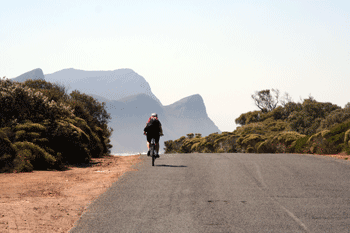 |
|
В ЮАР принято левостороннее движение...
|
День 4. 45
км
Нет, мы не изверги, и кое-что человеческое нам не чуждо. В этот день у
нас небольшой километраж, который позволит нам осмотреть интересный и
довольно старый городок. В этот день мы едем по "историческим землям" и
приезжаем в Моссел Бей, главную достопримечательность дня. Здесь
сохранился старинный по местным меркам центр, с церквями и особняками,
поставлен памятник Бартоломео Диашу. Кто это такой? Португальский
мореплаватель, первым из европейцев достигший Южной оконечности Африки.
Первооткрыватель, однако! Более известен, конечно, Васко да Гама. Но он
прошел в этих краях десятилетием позже.
| 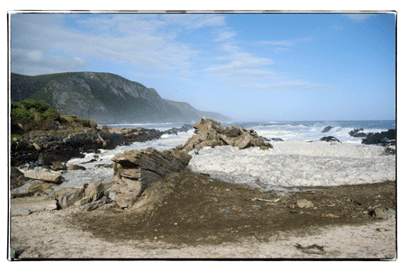 |
|
Индийский океан. Фото В. Макарова, 2009 год.
|
День 5. 75
км,
В этот день наше утро начнется согласно расписания с подвига. Мы поедем
в гору. Впрочем, и весь день нам предстоит ездить по холмам. Выезжаем
из Мосселс Бея и едем на запад. Немного проедем по шоссе, а затем
свернем на спокойную дорожку идущую ближе к океану. Больших
достопримечательностей в этот день нет, просто Африка, велосипед, и
красивые виды. Часть пути пройдет по грейдерной дороге. А что вы
думали? Это все-таки не Южная Голландия, а Южная Африка. Край суровый,
несмотря на то, что мы поедем уже не по пустыне, как было в первые два
дня, а по "бушу" - низкорослому кустарниковому лесу.
| 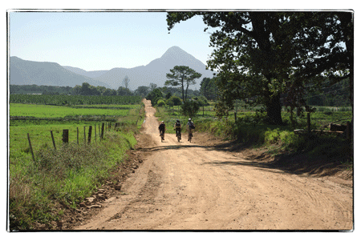 |
|
Ужасы Африканского велотуризма. В. Макаров 2009
|
День 6. 85
км
Продолжаем наше движение на запад. Холмов становится меньше, грунтов -
больше. Время от времени, заезжаем в леса. Интеерсное место ждет нас
вечером - это небольшой городок в устье реки Бреда. Конечно, этот
городок далеко не шедевр архиитектуры, но зато он известен тем, что в
бухту, которая омывает его берег, заплывают погостить киты. Конечно, мы
совершим попытку китов этих увидеть, что говорят, красиво, но "не
гарантировано". Киты - вольные птицы..., нет, не птицы... Лучше сказать
так: киты - вольные рыбы, и живут по своему какому-то расписанию. Может
быть нам повезет?
| 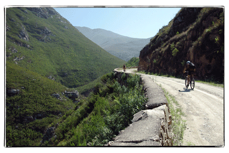 |
|
Дорога над ущельем. В. Макаров велопоход 2009.
|
День 7. 55
км
Да, мы поедем всего 55 километров, зато практически без асфальта. Нас
ждет грунтовый трек. А утро начнем с того, что проплывем немного на
кораблике по реке. Отчего? Это просто интересно! Да и дорог здесь почти
нет. Вот такая вот лесная глушь. Но это еще ничего. Впереди нас ждет
национальный парк. Вот где глушь настоящая!
Мы въедем в парк Де Хуп, разместимся в кемпинге, и далее поедем кататься. Тут есть несколько вариантов: можно кататься к берегу Океана, опять же, к тому самому берегу, к которому приплывают киты. Можно вломить в гору (этот ужас, видимо, без гида) по треку для крутых байкеров. А можно просто погулять пешком, так как в национальном парке De Hoop Nature Reserve есть для этого все возможности. Обращу внимание: размещение по маршруту - чтоб я так жил! Но в национальном парке условия скромнее. Летние домики и (о ужас!) душ снаружи. В позапрошлый раз, в 2010 году, когда одна девушка мылась в душе, туда заглянула настоящая обезьяна! Нет, правда, самая что ни на есть, настоящая шерстяная с хвостом. Но такое размещение - один раз, только в национальном парке.
День 8. 75 км
Утро этого дня начинается с того, что мы выдвинемся к мысу Игольный, откуда продолжаем линейный маршрут! Мыс Игольный, или на местном, басурманском наречии - Агуильяс, самая южная точка Африки. Именно тут, а не в Кейптауне смыкают воды два океана. Грех не искупаться, кстати. Дальше движемся к городку Napier, который станет на одну ночь нашим домом. Этот городок по местным порядкам считается старинным, здесь сохранились старые дома старых колонистов, церковь. В настоящее время тут живут 2500 жителей, совсем не много. Отчасти поэтому тут сохранился дух старины. А может быть самая южная пивоварня в ЮАР наводит нас на такие размышления?
День 9. 65 км
Мы продолжаем двигаться на запад, и нас ждет выход к побережью еще одного океана - Атлантического. Произойдет это в городке Hermanus, который протянулся вдоль океана на несколько километров. Херманус - курортное место, здесь есть пляж, и есть "дорожка по уступу". В этом месте Африка обрывается к Океану высоким обрывом, и по его верху идет тропа, с которой открываются отличные виды. Будете себя хорошо вести - пойдем в вечерний ресторан по тропе. Это красиво. Назад нас отвезет наш гид-шофер.
День 10. 82 км
Злые местные языки утверждают, что дорога от Хермануса к Гордонс Бэю, пригороду Кейптауна, самая красивая в мире. Я думаю, что они, конечно, врут. Каждый кулик свое болото хвалит. Хотя... Слева - океан, справа - горы. Мы посредине на дороге. Асфальт. Ловите момент, это наша последняя дорога по ЮАР. Вечером мы зачехлим свои велосипеды, и отправимся в отель в Кейптауне.
День 11.
Сегодня мы взойдем на Столовую гору. Это будет утром. Мы двинемся по тропе, которую преодолеем часа за 3,5 - 4. Осмотрев Кейптаун сверху, мы спустимся вниз, и вечер посвятим осмотру Кейптауна.
Чем заняться в Кейптауне? Скажем прямо, есть что посмотреть. Кейптаун старше Петербурга, и в нем сохранились старинные постройки разных времен. Конечно, город не был столицей великой империи… Можно посмотреть Замок Доброй надежды конца 17 века, здание парламента, пройтись по пешеходной улице, посмотреть на местную готику – собор Святого Георгия. В городе есть мусульманские кварталы, негритянские. Можно зайти в музей Аквариум "Два океана", где представлены обитатели Индийского и Атлантического океанов, можно съездить в ботанический сад. Интересны прогулки на кораблике к лежбищу моржей. Моржи, конечно, не пингвины, но тоже кое что
| 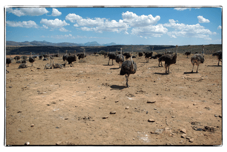 |
|
Еще один типичный африканский пейзаж. В. Макаров
велопоход 2009.
|
День 12
Мыс Доброй Надежы - место, куда мы отправимся в этот день. Увы, на автобусе. На самом деле, если смотреть на глобус, то кажется, что мыс Доброй Надежды совсем рядом. Для велосипедиста это не вполне так. Полная петля от Кейптауна составляет примерно 140 километров. При чем, дорога довольно горная. Посему, мы поедем на автобусе. Заодно, конечно, посетим пингвинов, и, может быть, моржей, погуляем пешком по Доброй Надежде. Может быть, надежда перейдет частично к нам от мыса?
| 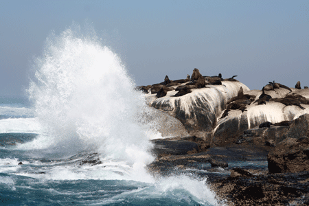 |
|
Моржовое лежбище. И. Гуревич, велопоход 2009.
|
День
13. Отлет.
Утро этого дня, еще "наше". Можно успеть искупаться в океане. Он
теплый. А нам пора лететь назад, в северное полушарие! Хотя, скажем
прямо: если вы располагаете временем, вы можете и задержаться в ЮАР.
Пусть сюда не близкий, кто его знает, удасться ли прилететь еще раз?
Так что, если хотите задержаться, дайте нам знать. Забронируем вам
что-нибудь.
| 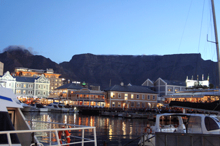 |
|
Вечерний Кейптаун. Бухта и вид на Столовую гору.
|
Немного цифр:
Стоимость маршрута смотрите на странице календарь.
Но, сколько бы она ни была, она включает в себя:
Все внутренние трансферы, в том числе в аэропорт (кроме трансфера тем, кто остается в ЮАР на больший срок).
Размещение в «Лоджиях» lodge –
небольшие частные гостиницы. Размещение 2 человека в
номере (кроме ночи в нац. парке Де Хуп). Везде в
наличии душ, постельное белье и даже туалет.
Все входные платы в национальные парки и музеи, включенные в программу
Все завтраки
Все ланчи в ходовые дни.
Машина сопровождения для перевозки багажа, а также обессиленных
участников похода
Гиды в ассортименте. В том числе те, кто могут помочь с ремонтом
велосипеда.
В
стоимость не входит:
- питание на дневках в Кейптауне кроме завтраков
- алкогольные напитки
- визовый сбор
- авиаперелет
Имейте ввиду, что маршрут по Африке требует умения ездить на велосипеде. Конечно, машина сопровождения всегда при нас, но чтобы получить максимальное удовольствие от похода, надо поддерживать свою форму. Катайтесь на велосипеде, как бы ужасно это не было!
ПОДАТЬ ЗАЯВКУ можно со страницы "Календарь"
| 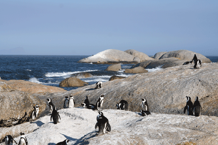 |
|
До встречи в ЮАР!
|